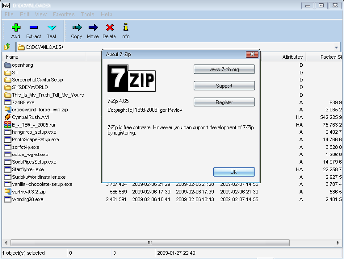
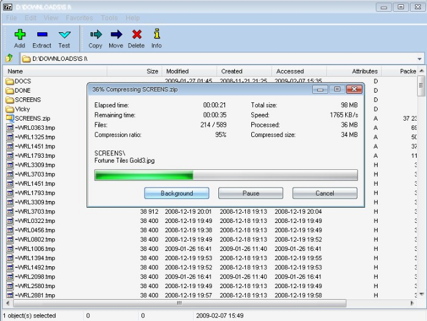
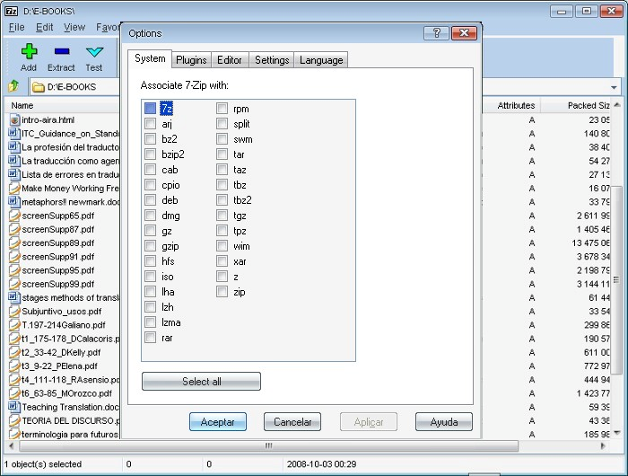

About 7-Zip
7-Zip is a file archiver with a high compression ratio. It is free, open-source software, with most of its code distributed under the GNU LGPL license. Some components are covered by the BSD 3-clause License, and certain parts are subject to the unRAR license restrictions. For more details, refer to the 7-Zip license information. You can use 7-Zip on any computer, including those in commercial organizations, without needing to register or pay.
Download 7-Zip 24.09 (2024-11-29)
Features
- High compression ratio in 7z format with LZMA and LZMA2 compression
- Supported formats:
- Packing / unpacking: 7z, XZ, BZIP2, GZIP, TAR, ZIP and WIM
- Unpacking only: APFS, AR, ARJ, CAB, CHM, CPIO, CramFS, DMG, EXT, FAT, GPT, HFS, IHEX, ISO, LZH, LZMA, MBR, MSI, NSIS, NTFS, QCOW2, RAR, RPM, SquashFS, UDF, UEFI, VDI, VHD, VHDX, VMDK, XAR and Z
- For ZIP and GZIP formats, 7-Zip provides a compression ratio that is 2-10 % better than the ratio provided by PKZip and WinZip
- Strong AES-256 encryption in 7z and ZIP formats
- Self-extracting capability for 7z format
- Integration with Windows Shell
- Powerful File Manager
- Powerful command line version
- Plugin for FAR Manager
- Localizations for 87 languages
Screenshots


